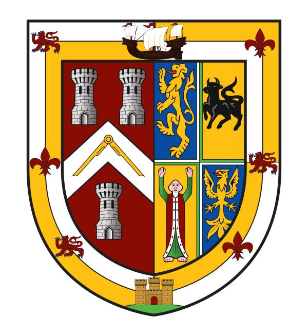

| Provincial Grand Master | Stephen Andrew James |
| Deputy PGM | Mark David Burstow, PGSwdB |
| Assistant PGM | Micheal Richard Parkes, PSGD |
| Assistant PGM | Leon Anthony Matthews, PJGD |
| Senior Grand Warden | Keith Starr | 8025 |
| Junior Grand Warden | Simon Dudley | 0000 |
| Chaplain | John Richard Storey | 1168 |
| Treasurer | Stephen Mark James | 0000 |
| Registrar | Anthony Paul Martin Chambers | 0000 |
| Secretary | Terry Green | 7873 |
| Director of Ceremonies | Richard Kenneth Jones | 1266 |
| Sword Bearer | Rodney Johnathan Playford | 9050 |
| Superintendent of Works | Trevor Anthony Bond | 0000 |
| Deputy DC | Andrew John Larkin | 6827 |